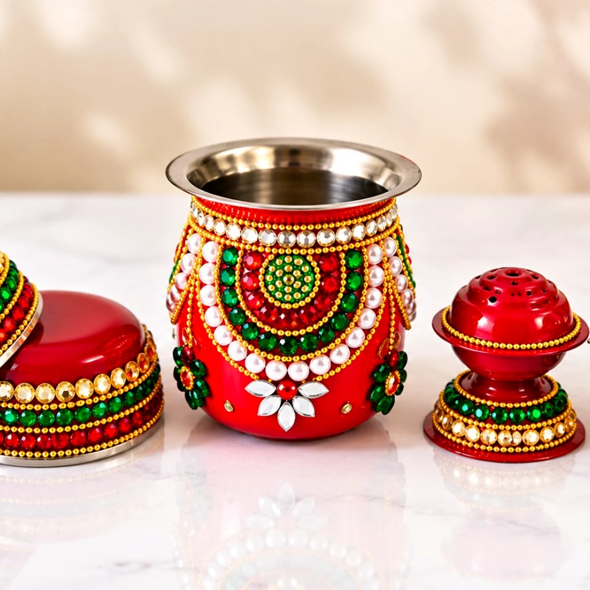
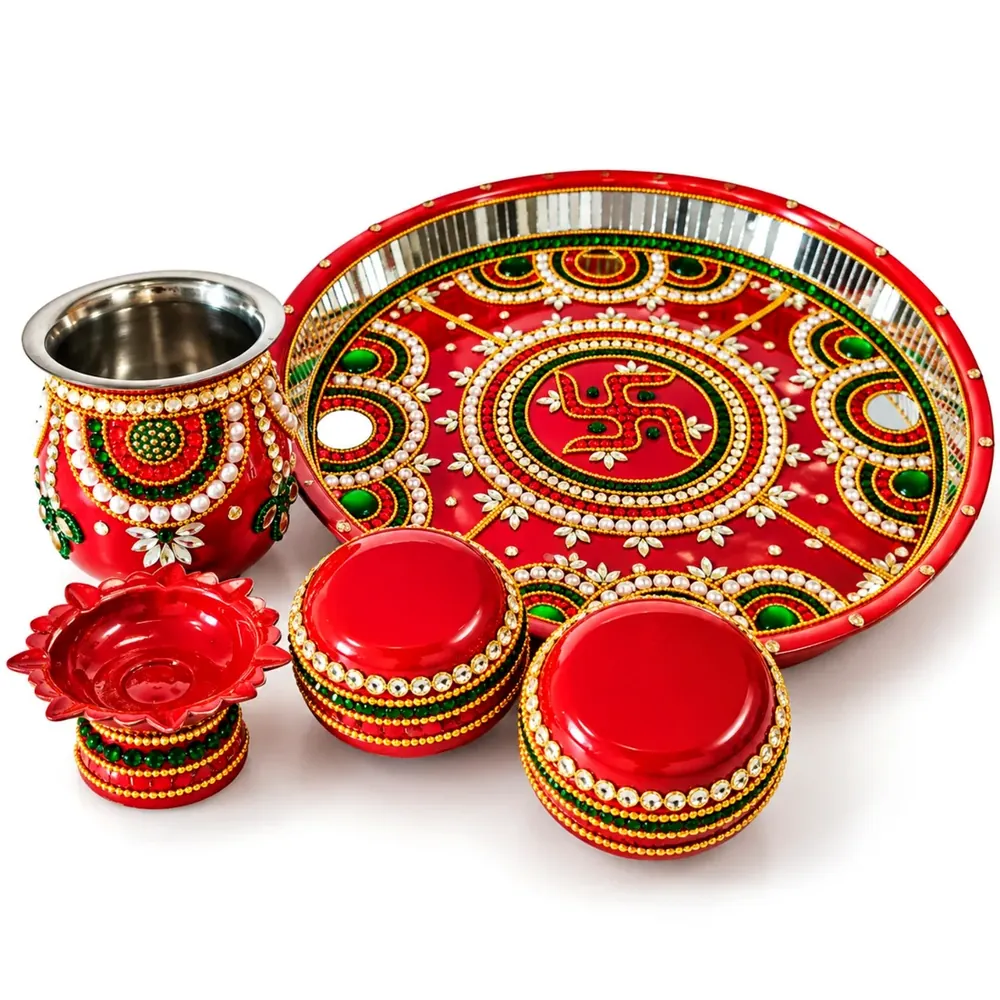
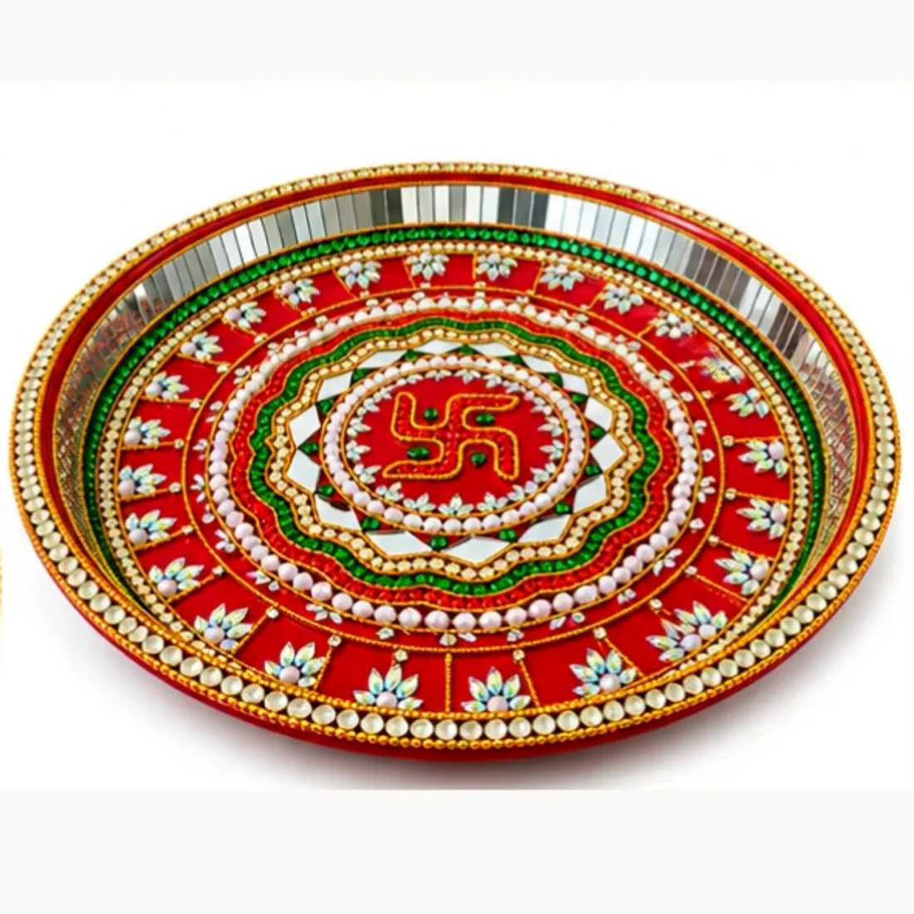

Karwa Chauth guide
Karwa Chauth Thali Decoration Ideas
A practical guide to decorating a Karwa Chauth thali: what to include, colour and mirror-work ideas, and how to care for a decorated thali.
⏱ 5 min readRead guide →
Home / Blog
Guides & ideasSimple, practical guides for choosing, decorating and caring for puja essentials, written for festivals and weddings.
A practical guide to decorating a Karwa Chauth thali: what to include, colour and mirror-work ideas, and how to care for a decorated thali.

How to choose a decorative pooja thali for a wedding: size, material, decoration, what is included and when to order.

Kalash decoration ideas for pooja, Diwali, Navratri, Ganpati and griha pravesh, plus tips to choose and care for a decorated kalash.

Where a kalash is used in a wedding, kalash decoration ideas for marriage, and what to check before buying a decorative kalash for wedding.

Pooja thali decoration ideas, aarti thali designs, colour combinations and a step-by-step guide to decorating a thali at home.

A Karwa Chauth thali items list with karwa lota, chhalni, katoris and diya, plus decoration ideas and how to be ready the day before.

Diwali diya decoration ideas for puja and home, how to arrange an aarti thali, and simple safety tips for lighting diyas.

Rakhi thali decoration ideas for Raksha Bandhan: what to include, colour ideas, how to arrange it and how to reuse the thali.